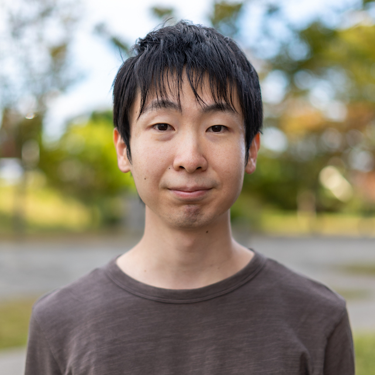
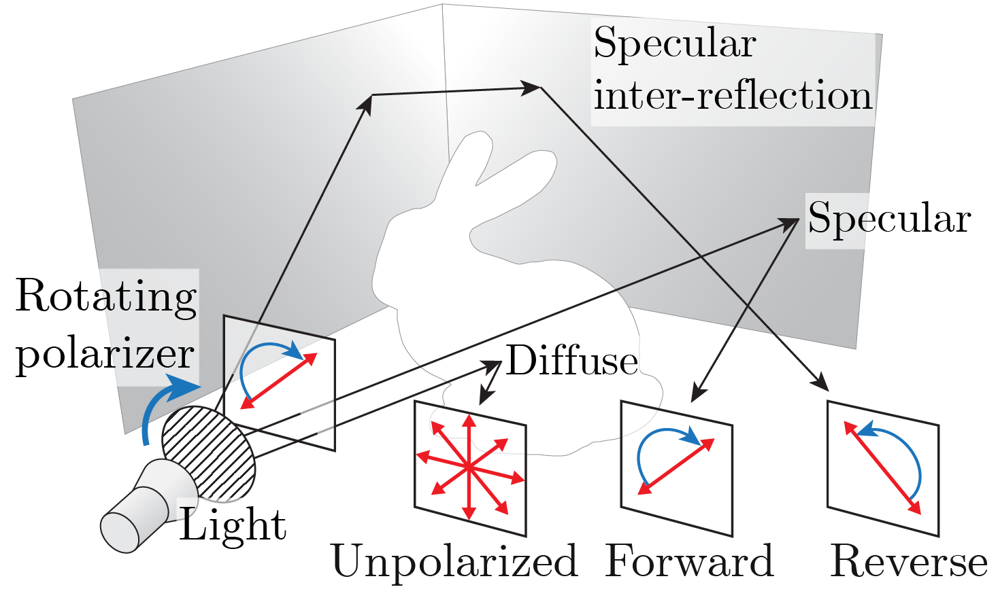
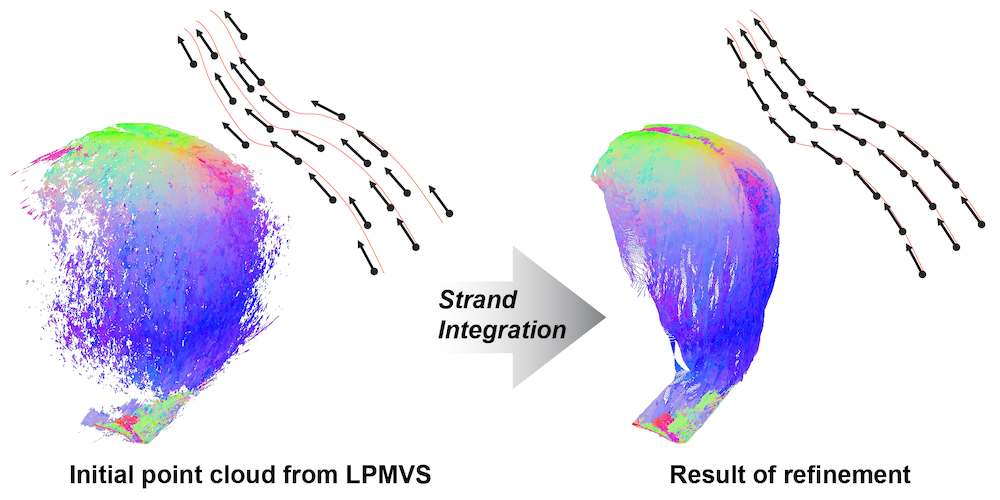
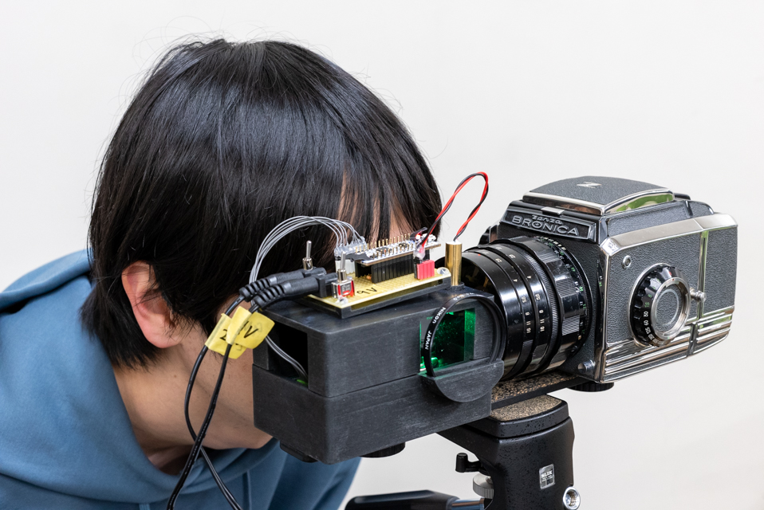

Ryota Maeda / 前田 涼汰
Ph.D. Student
Visual Media Engineering Lab (advised by Prof. Shinsaku Hiura)
Graduate School of Engineering
University of Hyogo
I did research internships at Prof. Mukaigawa's lab at NAIST (2018), and at CyberAgent AI Lab (2022). Previously, I got a Bachelor's (2020) and Master's (2022) degrees in Engineering from University of Hyogo.
Download [CV]

Projects

Polarimetric Light Transport Analysis for Specular Inter-reflection
Ryota Maeda, Shinsaku Hiura,
arXiv, 2023.
[arXiv]

Refinement of Hair Geometry by Strand Integration
Ryota Maeda, Kenshi Takayama, Takafumi Taketomi,
Computer Graphics Forum (PG2023), 2023.
[Project page]

EpiScope: Optical Separation of Reflected Components by Rotation of Polygonal Mirror
Ryota Maeda, Shinsaku Hiura,
SIGGRAPH Asia 2021 Technical Communications, 2021.
[Project page]
External Links
GitHub LinkedIn Flickr Blog(Japanese)Background
| 2013/4~2016/3 | The High School of University of Hyogo |
| 2016/4~2020/3 | School of Engineering, University of Hyogo |
| 2018/8~2018/9 | Internship at Optical Media Interface Lab (Mukaigawa Lab) at NAIST |
| 2019/4~present | Visual Media Engineering Lab (Hiura Lab) at University of Hyogo |
| 2020/4~present | Graduate School of Engineering, University of Hyogo |
| 2022/8~2022/9 | Internship at CyberAgent AI Lab (and continued as a part-time work until 2023/10) [Report] |